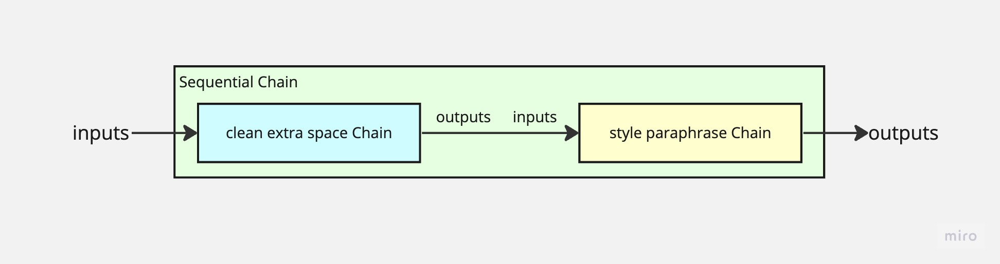
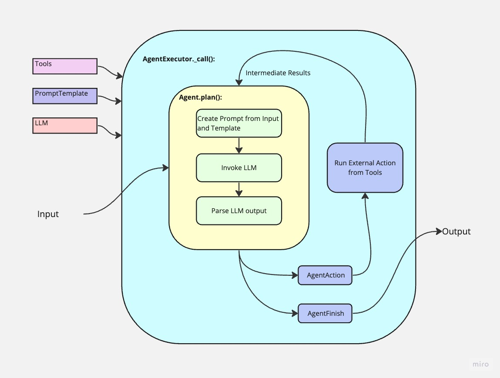

1 Overview
Recently I’ve looked into the LangChain project and I was surprised by how it could be such a powerful and mature a project built in such short span of time. It covers many essential tools for creating your own LLM-driven projects, abstracting cumbersome steps with only a few lines of code.
I like where the project direction is going, and the development team has been proactively including and introducing new ideas of the latest LLM features in the project.
The path to understanding this new project weren’t really smooth. It has its own opinions for code organization and it could be unintuitive to guess how to hack your own projects for more than the tutorials. Many of the tutorials out there explains how to create a small application with LangChain but doesn’t cover how to intuitively comprehend the abstraction and design choices.
Hence I have taken the initiative to document my personal cognitive process throughout this journey. By doing so, I aim to clarify my own understanding while also providing assistance to y’all who are interested in hacking LangChain for fun and profit.
This blog post will dedicate to the overall understanding of all the concepts. I found it really helpful to start by understanding the concepts that directly interacts with the LLM, especially the core API interfaces. Once you have the mindmap of all the LangChain abstractions, it’s much more intuitive to hack and extend your own implementation.
I’ll be covering the very basic concepts around Chain and Agents:
- Chain
- Tool
- Template
- Agent
- AgentExecutor
What I’m not writing in this blog, and they’ll be for another blog/discussion:
- Embedding
- Memory
- Document Loader
- Vector Store
Pick the right ones, and programming will flow naturally from design;
Pick the wrong ones, and programming will be a series of nasty surprises.
– MIT Professor Daniel Jackson on Abstraction in Software, in his book “Software Abstractions”
2 Concepts
2.1 Chains
Chains are the basic way of organizing actions, extending LLM capabilities, and integrate different Chain actions together. You can think of it as a “chain” of actions grouped together.
The interface of the base Chain class:
1 | class Chain: |
Once you understand this it’s pretty clear how to extend the Chain. You’ll need to define:
- The input parameters
- The output parameters
- The action to take when calling the Chain, by defining the abstract
_call()method (or_acall()for asynchronous calling, but I’d like to skip those for now).
The __call__(), and run() methods are really just wrappers around this core method that processes input parameters.
Sometimes it could be confusing that there are so many different ways of calling the same Chain. But think of:
_call()as the basic functionality you’ll need to define as the developer. It has nice, preprocessed input parameters.__call__()orrun()as the interface for users of your project that takes in more flexible input.
With this interface, you can extend the functionality by “chaining” them together in a link. The output from the previous chain will be the input keys to the next.
See examples in: https://colab.research.google.com/github/pinecone-io/examples/blob/master/generation/langchain/handbook/02-langchain-chains.ipynb
2.1.1 LLMChain
LLMChain is a special type of chain that wraps around the underlying LLM generative engine. And it’s the most commonly used Chains for direct use and extensibility. You can extend it to any special features you want, or even “chain” them up to perform a pipeline of actions with LLM.
The interface for LLMChain is simple. See more at source code.
1 | class LLMChain: |
LLMChain extends the original Chain by defining:
- inputs: the same inputs that are required by the text template.
- outputs: the “text” field, which is the output return of the LLM generation.
You can either directly call it, or use it to build more specialized Chains.
1 | chain = LLMChain(llm=llm, template=tempate) |
See more at the “Template” section to understand prompt Template.
2.1.2 Extending and Joining Chains
You can extend the Chain to accomplish anything that requires inputs and produces an output. Think of it as a task and you can use it for: e.g. text preprocessing, or even parsing.
A Chain doesn’t necessarily have to involve interacting with LLMs. It can be any task you find useful when implementing the whole task pipeline.
See examples in section “Generic Chains”:
In the example, the TransformChain that does just regex transformations to remove white spaces. You can use it together with other Chains to create a pipeline of transformation -> rewrite using SequentialChain to link them together.
1 | sequential_chain = SequentialChain( |

Once you understand Chains, you can build powerful pipeline of chains in LangChain (hence the name). There are chains that:
- Calculates and run math operations.
- Summarizes text.
- Translates into a different language.
- Come up with product names and slogans.
- …
See more Chain examples on Github: https://github.com/hwchase17/langchain/tree/master/langchain/chains
2.2 Prompt Template
I was quite baffled with the idea of prompt and templates when I’m first exposed to LangChain. But the idea is actually quite simple. It’s the same idea with any templates: you define a template text, and interpolate it with text variables.
The most common use case of prompt template is that it creates the outline of the input to the LLM, and you can customize the input by variables. That’s it. That’s how simple it is.
One common use case for Template is, as mentioned above, to format the final LLM prompt. It could be very useful in Agents, where you have multiple queries to the LLM, and you want to define the prompt with different intermediate steps at each iteration.
And let’s take a look at the concept of Agents.
2.3 Agent
One of the most powerful applications for LLM is tool-use. Agent provides an abstraction to choose from a toolbox to solve more open and complicated questions.
According to LangChain’s official documentation:
Some applications require a flexible chain of calls to LLMs and other tools based on user input. The Agent interface provides the flexibility for such applications. An agent has access to a suite of tools, and determines which ones to use depending on the user input. Agents can use multiple tools, and use the output of one tool as the input to the next.
See more at:
- https://python.langchain.com/docs/modules/agents/
- https://archive.pinecone.io/learn/langchain-agents/
2.3.1 Agent Interface
1 | class Agent: |
That’s it. That’s the interface for Agent.
First step of understanding the Agent is to strip away the complicated tool-use features etc and look at the interface.
Agent is an automatic actor that can make “plans” based on each step of the LLM output. You can add more features to create a full-featured, complete Agent that can run actions for you, e.g. Tools to use tools, PromptTemplates to build prompts, Parsers to parse output.
To create your own LangChain Agents, you’ll just need to worry about making the plans (e.g. handling input, creating prompts, parsing outputs, and returning outputs).
To illustrate the interface for Agents, I’ve created a very simple implementation of a dummy agent that executes whatever tool you define for exactly 3 times.
In this example, the plan is: return the AgentAction for 3 times with whatever tool that’s given, and then return the AgentFinish.
1 | class DummyAgent(BaseSingleActionAgent): |
(See the snippet on Gist. Also, I’ve just started a small side project that hacks Agents. See more on Github.)
2.3.2 Tools
Tool is an interface that interacts with other environments. The interface is real simple too, with run or asynchronous arun.
Tools can be any external actions to the LLM, e.g. calculators, search engines, SQL execution, document or data loaders, or anything with an API. It can also be any other Chains!
Its interface is also simple. Similarly, you’ll just need to define the inputs, outputs, and what to run.
1 | from langchain.tools.base import BaseTool |
Sometimes it could be confusing as it could be used with different ways of initializing:
1 | # initializing by setting the name, description, and a callable function |
But the idea is the same. Remember, it’s but syntactic sugar to create a Tool with name, description, and the _run step is to call the func.
Tool’s function could be an API call (e.g. calculator, search, load text, …), or it could invoke other Chains. It’s flexible like that, and you can reuse Chains or even Agents as Tool function. So in this way, one Agent can invoke other Agents.
2.3.3 AgentExecutor
To get an idea of how Agents come about and some of the fundamental ideas on LLM task performing, see my other blog on a list of papers I found useful in understanding LLM reasoning.
AgentExecutor is also also a Chain: it has the exact simple interface of a Chain: input, output, and the action - which is to wrap everything about Agents together.
There are quite a few syntactic sugars provided by the LangChain library to “initialize_agent”. But remember, it’s not returning an Agent, but an AgentExecutor, which has the interface of a “Chain”.
1 | from langchain.agents import initialize_agent |
(Example from: https://archive.pinecone.io/learn/langchain-agents/)
The Agent class abstract the most essential part of the agent behavior: how it “plans” each step based on input and intermediate results, and how it decides what actions to take, or whether to finalize the Agent execution.
The _call() implementation of an AgentExecutor Chain wraps it all up:
- Initialize the Agent by passing arguments to it.
- Reads Agent output.
- Runs the actions from the toolbox.
- Finalize the execution by providing the output.
- Other infrastructure code like timeout, iteration limits, output streaming, etc.

These grunt works all implemented in AgentExecutor so that we can focus on the interesting part, which is the actual planning.
And typically we ignore these grunt work and only focuses on the interesting part, like creating a ReAct Agent that performs tasks based on the tools given.
And yes, AgentExecutor is a Chain and so it can be used with other Chains or as Tools to other agents.
See another example in the same Pinecone tutorial mentioned above:
1 | # initializing by setting the name, description, and a callable function |
llm_math is an AgentExecutor class that wraps the “llm_math” Agent, and it’s a Chain whose run() interface is a function to invoke the Agent.
Clear enough?
LangChain already provides a rich library of Agents that can perform interesting work, like reading CSV data, managing files, calling APIs, etc.
See: https://github.com/hwchase17/langchain/tree/master/langchain/agents/agent_toolkits
3 Putting It All Together: ZeroshotAgent
Once you understand all these pieces, you can assemble everything together to make your own Agent.
There are two papers behind the implementations. I’ve also mentioned them in my previous blog:
- MRKL Systems: A modular, neuro-symbolic architecture that combines large language models, external knowledge sources and discrete reasoning that describes the idea of combining LLM with external tools.
- ReAct: Synergizing Reasoning and Acting in Language Models that describes the ideas of formatting the prompt to make LLMs reason with external tools and Chain-of-Thought reasoning.
LangChain had its implementation of ZeroShotAgent
- Create a prompt to guide the workflow, create few shot examples to follow the pattern of:
- Question:
- Thought:
- Action:
- Action Input:
- Observation: (use tools, Thought + Action + Observation loop can happen N times)
- Final answer:
- Create Tools to the Agent
- Parse the LLM output from the Thought, e.g. what tools to use, is it the final answer.
- Invoke the tools and create “Observation”.
- Create yet another prompt based on the output, and again feed it to LLM.
- Repeat until getting final answer. Output.
If you think this is helpful, I’ll keep exploring and write what I found about LangChain and NLP + LLM in general. Hope this helps your understanding!
4 References
- Harrison Chase’s presentation: https://docs.google.com/presentation/d/1EDmM1R0AcstfjadCUpvoa8h7NGwNqE2dwtJXqRK1618/edit?pli=1#slide=id.g238c17053ef_0_73
- Pinecone’s LangChain Handbook: https://archive.pinecone.io/learn/langchain/
- LangChain official documentation: https://python.langchain.com/docs/modules/agents/
- Streamli LangChain tutorial: https://blog.streamlit.io/langchain-tutorial-1-build-an-llm-powered-app-in-18-lines-of-code/
- Arize tutorial on LangChain: https://arize.com/resource/langchain-tutorial/
- Andrew Ng’s LangChain tutorial: https://www.deeplearning.ai/short-courses/langchain-for-llm-application-development/